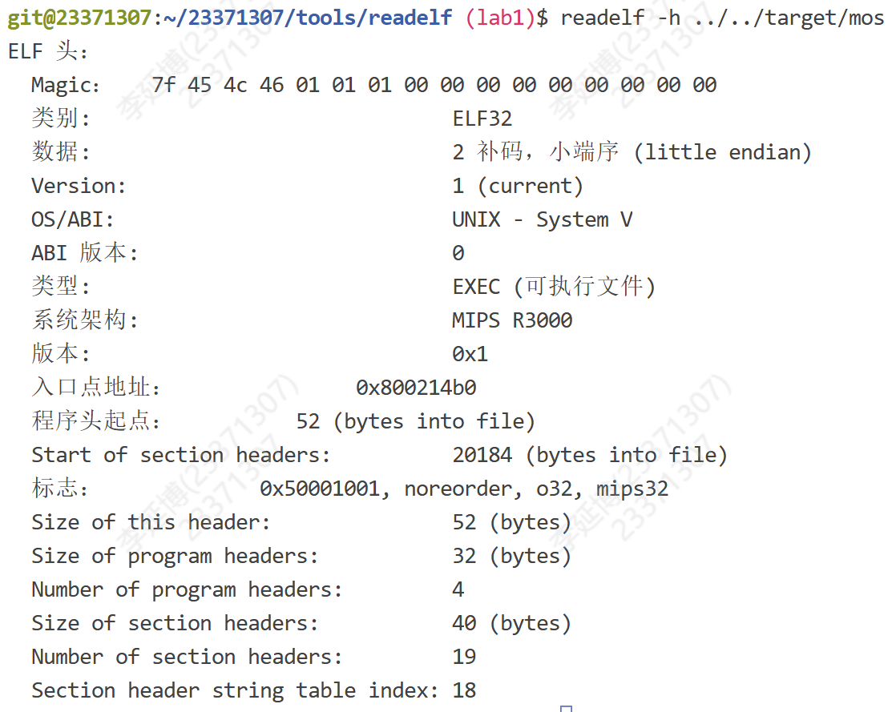
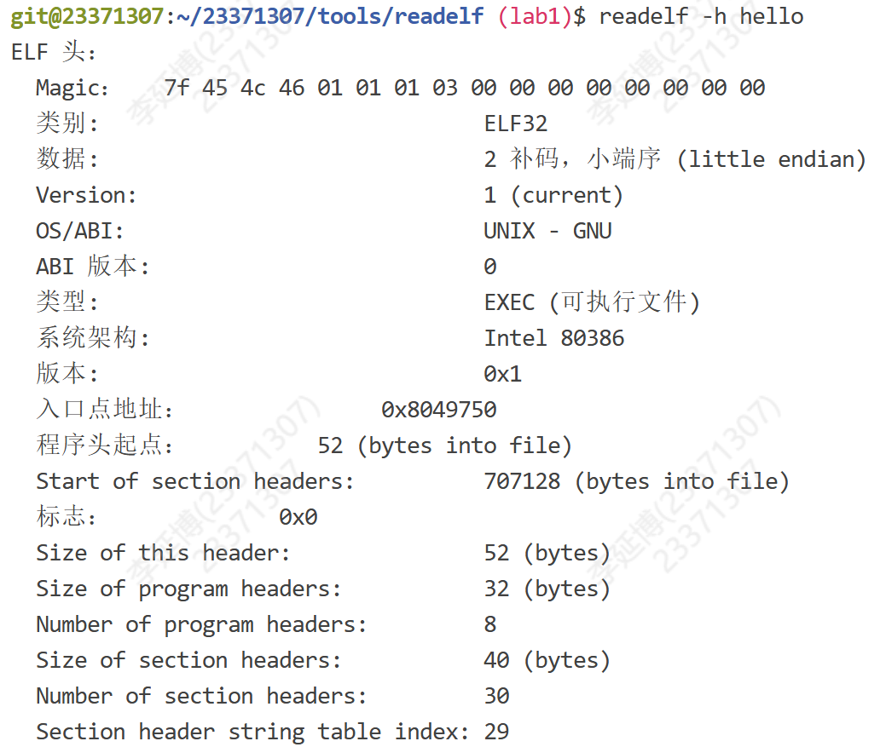
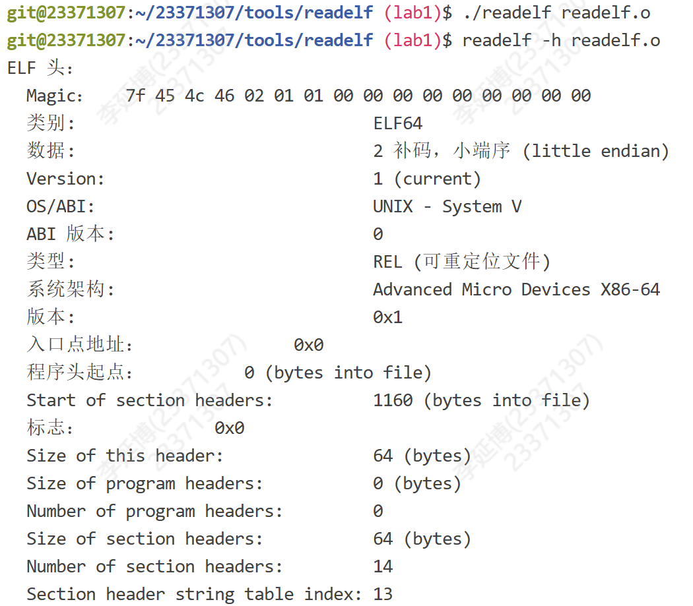
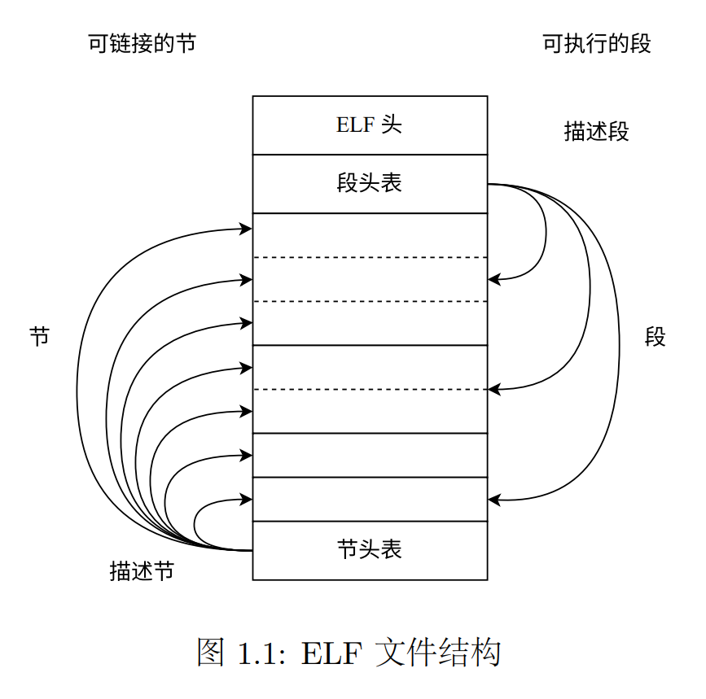

BUAA-OSLab1实验总结
自我之像，犹在镜中。
壹 前言
这周自律饮食、规律锻炼很成功！虽然学习时间减少了，但还是希望保持这样的生活节奏！
事不宜迟！下面请看近两周的Lab1实验总结吧！
贰 正文
一 思考题汇总
Thinking1.1
在阅读 附录中的编译链接详解 以及本章内容后，尝试分别使用实验环境中 的原生 x86 工具链（gcc、ld、readelf、objdump 等）和 MIPS 交叉编译工具链（带有 mips-linux-gnu- 前缀，如 mips-linux-gnu-gcc、mips-linux-gnu-ld），重复其中的编 译和解析过程，观察相应的结果，并解释其中向 objdump 传入的参数的含义。
objdump使用格式：
1 | objdump -DS <TODO.o> > <output> |
-D:--disassemble-all Like -d, but disassemble the contents of all non-empty non-bss sections, not just those expected to contain instructions. -j may be used to select specific sections.
-D提供了反汇编所有 section的功能。
-S:--source Display source code intermixed with disassembly, if possible. Implies -d.
-S在可能的情况下，显示源代码与反汇编代码的混合视图，并且隐含启用-d选项，搜索当前目录或调试信息中的路径来访问源文件代码。
下面复刻“A.3 编译与链接详解”的操作：
首先我们有一个简单的C语言程序
helloworld.c：1
2
3
4
5
int main() {
printf("Hello World!\n");
return 0;
}对源代码只预处理不编译：
gcc -E helloworld.c > preprocess:输出较长，下述节选摘自指导书：
1
2
3
4
5
6
7
8
9
10
11
12
13
14
15
16
17
18
19
20
21
22
23
24
25/* 由于原输出太长，这里只能留下很少很少的一部分。 */
typedef unsigned char __u_char;
typedef unsigned short int __u_short;
typedef unsigned int __u_int;
typedef unsigned long int __u_long;
typedef signed char __int8_t;
typedef unsigned char __uint8_t;
typedef signed short int __int16_t;
typedef unsigned short int __uint16_t;
typedef signed int __int32_t;
typedef unsigned int __uint32_t;
typedef signed long int __int64_t;
typedef unsigned long int __uint64_t;
extern struct _IO_FILE *stdin;
extern struct _IO_FILE *stdout;
extern struct _IO_FILE *stderr;
extern int printf (const char *__restrict __format, ...);
int main()
{
printf("Hello World!\n");
return 0;
}对源代码编译而不链接，这里自动会生成同名.o目标文件，即
helloworld.o，然后对其进行反汇编并重定向输出。操作代码如下：1
2gcc -c helloworld.c
objdump -DS helloworld.o > tmptext.txt此时在
tmptext.txt中生成了反汇编结果，我的main函数部分结果如下：1
2
3
4
5
6
7
8
9
100000000000000000 <main>:
0: f3 0f 1e fa endbr64
4: 55 push %rbp
5: 48 89 e5 mov %rsp,%rbp
8: 48 8d 05 00 00 00 00 lea 0x0(%rip),%rax # f <main+0xf>
f: 48 89 c7 mov %rax,%rdi
12: e8 00 00 00 00 call 17 <main+0x17>
17: b8 00 00 00 00 mov $0x0,%eax
1c: 5d pop %rbp
1d: c3 ret在指导书的引导下，我们发现在
call中printf的地址仍然为00_00_00_00，即截止链接以前，printf仍然不在我们的程序当中，最后我们允许gcc正常编译出可执行文件，再用objdump查看反汇编结果。操作代码如下：
1 | gcc -o helloworld helloworld.c |
截取新的反汇编结果中的main函数部分：
1 | 0000000000001149 <main>: |
自此，我们的call指令的地址不再为0，就在被标记为<puts@plt>的位置上，在我的跳板机中位于f0 fe ff ff。由此我们可以知道，作为一个被大量使用的函数printf，它应该是早就被编译成了二进制的形式，只是还没有与目标程序进行链接，而在编译的最后我们完成链接，printf的实现便与目标程序结合于一体，形成最终的可执行文件。
Thinking1.2
思考下述问题：
• 尝试使用我们编写的 readelf 程序，解析之前在 target 目录下生成的内核 ELF 文 件。
• 也许你会发现我们编写的 readelf 程序是不能解析 readelf 文件本身的，而我们刚 才介绍的系统工具 readelf 则可以解析，这是为什么呢？（提示：尝试使用 readelf -h，并阅读 tools/readelf 目录下的 Makefile，观察 readelf 与 hello 的不同）
先在
./tools/readelf/中运行make指令，然后在实验主目录下运行./tools/readelf/readelf ./target/mos指令，得到以下输出：1
2
3
4
5
6
7
8
9
10
11
12
13
14
15
16
17
18
190:0x0
1:0x80020000
2:0x80021900
3:0x80021918
4:0x80021930
5:0x0
6:0x0
7:0x0
8:0x0
9:0x0
10:0x0
11:0x0
12:0x0
13:0x0
14:0x0
15:0x0
16:0x0
17:0x0
18:0x0我们利用题目提到的hint：使用
readelf -h来阅读相关信息： 可以看到类别是ELF32，数据是小端序的。
此外我们发现题目提示中的hello也是相同的效果，可以用readelf操作获得输出，对其使用
readelf -h后获得输出如下： 可以看到类别同样是ELF32，数据是小端序的。
下面我们执行命令
./readelf readelf.o发现并没有输出，再执行命令readelf -h readelf.o，结果如下： 最明显的区别出现了！readelf.o的类别是ELF64！但是我们清楚地明白，ELF32是我们贯穿始终的唯一数据结构，自然是无法解析类别为ELF64的文件了。
Thinking1.3
在理论课上我们了解到，MIPS 体系结构上电时，启动入口地址为 0xBFC00000 （其实启动入口地址是根据具体型号而定的，由硬件逻辑确定，也有可能不是这个地址，但 一定是一个确定的地址），但实验操作系统的内核入口并没有放在上电启动地址，而是按照 内存布局图放置。思考为什么这样放置内核还能保证内核入口被正确跳转到？ （提示：思考实验中启动过程的两阶段分别由谁执行。）
我们在理论课上进行了学习，并将启动过程分为了两个阶段：
完成硬件初始化，加载并跳转到 Bootloader。
Bootloader 根据内核链接脚本的地址布局，加载内核到指定物理地址，并跳转至其入口。
因此，我们可以说，上电的启动入口地址只是CPU执行的起点，对硬件进行初始化，而内核的入口会由Bootloader加载后跳转过去。
二 实验难点分析
本次实验的核心内容：
理解ELF文件
printk函数实现
1 理解ELF文件
ELF文件 (Executable and Linkable Format) 正是 Unix 上常用的一种目标文件格式。因此它包含了大致三种文件类型：可重定位文件、可执行文件与共享对象文件。实验的一部分是让我们完善我们的readelf文件
对ELF文件进行解析。
 这里截取指导书上很简明的一张关于ELF文件结构的图，其中包含五个内容：ELF头、段头表、段头表的表项、节头表与节头表的表项。其中段头表与节头表中指向的内容其实是相同的区域，即他们只是ELF文件中2种不一样的结构视图，节相关的内容用于链接可重定位文件、而段相关的内容是在运行可运行文件和可共享文件时为加载器提供信息。这里我们采用了32bit的数据结构，在elf.h文件中定义了ELF32，其中
Elf32_Ehdr描述ELF头，Elf32_Shdr描述节(Section)头表，Elf32_Phdr描述段(Segment)头表，又叫做程序(Program)头表，大抵为了区分于节头表，称作Phdr。 exercise中的一项任务便是实现自己的readelf，根据前面的思考题，我们清楚它只能解析ELF32类型的节地址。练习代码如下：
1
2
3
4
5
6
7
8
9
10
11
12
13
14
15
16
17
18
19const void *sh_table;
Elf32_Half sh_entry_count;
Elf32_Half sh_entry_size;
/* Exercise 1.1: Your code here. (1/2) */
sh_table = (const void *)((const char *)binary + ehdr->e_shoff);
// 节头表首项地址
sh_entry_count = ehdr->e_shnum; // 节头表项个数
sh_entry_size = ehdr->e_shentsize; // 节头表项大小
// For each section header, output its index and the section address.
// The index should start from 0.
for (int i = 0; i < sh_entry_count; i++) {
const Elf32_Shdr *shdr;
unsigned int addr;
/* Exercise 1.1: Your code here. (2/2) */
shdr = (const Elf32_Shdr *)((const char *)sh_table + i * sh_entry_size);
// shdr = (Elf32_Shdr *)sh_table + i; 即跳到下一项，属同样效果
addr = shdr->sh_addr;
printf("%d:0x%x\n", i, addr);
} 最后，只需要将所有节放在一起，我们就可以将他们链接起来。那么如何将他们放在一起呢，指导书举了一个简单的例子：
1
2
3
4
5
6
7
81 SECTIONS
2 {
3 . = 0x10000; # 将定位计数器放在0x10000
4 .text : { *(.text) } # 把所有的.text放在.的位置
5 . = 0x8000000; # 指定新的地址，在此处继续放置
6 .data : { *(.data) } # 同上.text，放在一起后，自动跳转到最新的位置，继续放置
7 .bss : { *(.bss) } # 同上.text
8 } 以上也是我们在
kernel.lds中做的链接工作。
2 printk函数的实现
经过了OS这段时间的学习，我们明白了在构建操作系统的时候，是没有C语言标准库支持的，而我们在kern文件夹中看到的printk.c文件中，其实并没有直接的输出，而是传参利用了vprintfmt，其中运用了一个新的知识点：变长参数。在完成exercise之前我一直好奇于为什么vprintfmt中的va_list没有指导书所谓必须要有的va_start(va_list ap, lastarg)和va_end(va_list ap)，原来是在printk.c中完成了初始化与中止，而vprintfmt只是接收了va_list、fmt字符串、data上下文信息和outputk的函数指针，进行具体的输出工作。其中data还没太理解它的作用，printk传递的data是NULL🤔，希望以后能有所了解。
我们需要完成的任务便是在vprintfmt中解析字符串并处理占位符的问题。我们都知道占位符都是由'%'起手。补全代码的时候，莫名其妙给我一种OOU1写Parser的感受，顺着字符串依次解析，核心逻辑即：遍历遇到'%'便直接输出在此之前的所有东西，并开始解析占位符，将对齐、填充、正负的flag都解析到位后，进入case语句进行输出，遍历到'\0'的时候即可结束遍历。对整个vprintfmt的感觉还是非常美妙的~
三 我的实验体会
本次实验刚上手的时候感觉十分的困难，毕竟一下子拿到了如此多的文件，虽然每个文件都不可或缺，但是毕竟不能全部精读一遍，因此跟着指导书的思路，尽可能高效地获取更多的知识，并将他们纳入我的思维体系当中以谋求对操作系统一点点的理解。做之前感觉很难，写实验报告感觉很有收获。大抵就是难者不会，会者不难吧~
叁 后记
笔者在周五晚上极限完成实验总结，但是OOhw5还没写完哈哈哈~时间紧迫！各位！下次再见！！！
(●'◡'●)
If you like this blog or find it useful for you, you are welcome to comment on it. You are also welcome to share this blog, so that more people can participate in it. If the images used in the blog infringe your copyright, please contact the author to delete them. Thank you !